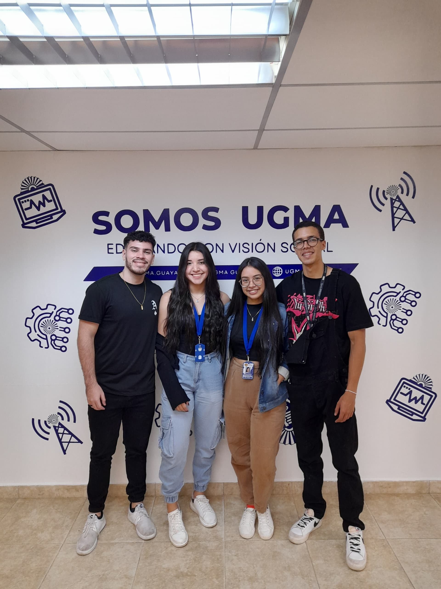

En nuestra campaña creemos en el poder de las pequeñas acciones para lograr grandes resultados. Cada botella, lata o papel que se recicla cuenta, y juntos podemos marcar la diferencia
Estas listo para ser parte del cambio? Unete a nuestra camapaña y haz tu aporte para un futuro en nuestra universidad mas sostenible
Somos un grupo de estudiantes de la Universidad Noriental Privada "Gran Mariscal de Ayacucho" y queremos invitarte a participar en nuestro proyecto de reciclaje
Nuestro objetivo es implementar una campaña en nuestra univerisdad para concientizar y reducir el impacto ambiental de los que generamos
